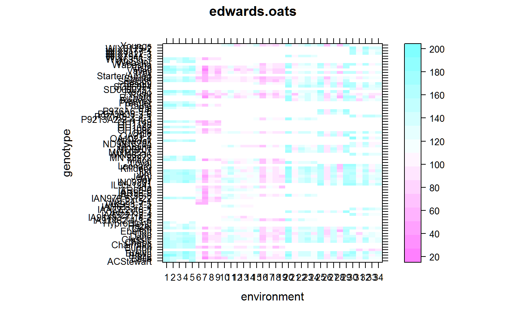
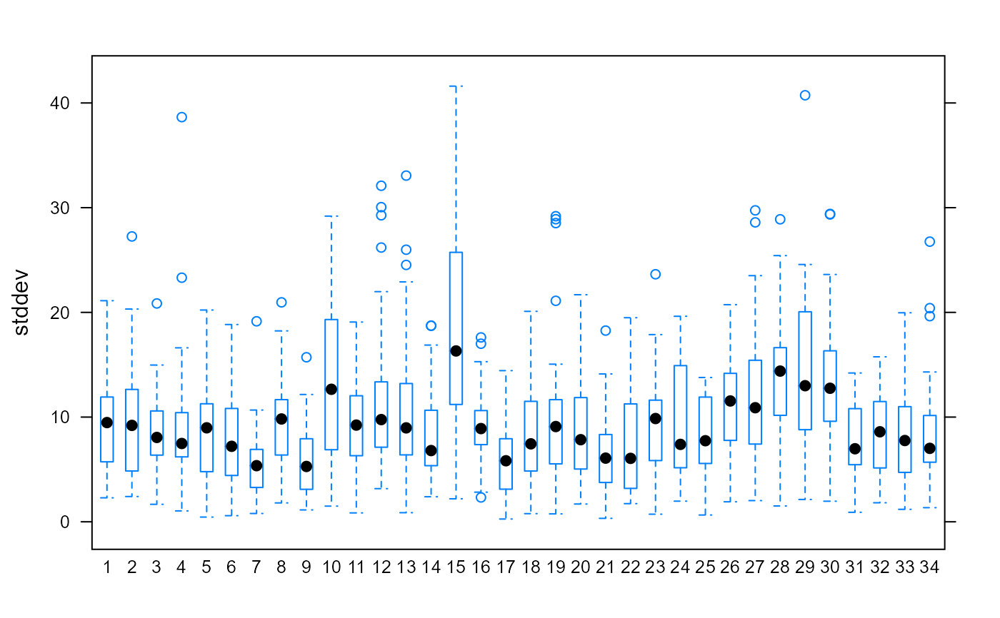

edwards.oats.RdMulti-environment trial of oats in 5 locations, 7 years, with 3 replicates in each trial.
data("edwards.oats")
A data frame with 3694 observations on the following 7 variables.
eidEnvironment identification (factor)
yearYear
locLocation name
blockBlock
genGenotype name
yieldYield
testwtTest weight
This data comes from a breeding program, but does not have the usual pattern of (1) genotypes entering/leaving the program (2) check genotypes that remain throughout the duration of the program.
Experiments were conducted by the Iowa State University Oat Variety Trial in the years 1997 to 2003.
In each year there were 40 genotypes, with about 30 released checks and 10 experimental lines. Each genotype appeared in a range of 3 to 34 of the year-loc combinations.
The trials were grown in five locations in Iowa: Ames, Nashua, Crawfordsville, Lewis, Sutherland. In 1998 there was no trial grown at Sutherland. There were 3 blocks in each trial.
Five genotypes were removed from the data because of low yields (and are not included here).
The environment identifaction values are the same as in Edwards (2006) table 1.
Electronic data supplied by Jode Edwards.
Jode W. Edwards, Jean-Luc Jannink (2006). Bayesian Modeling of Heterogeneous Error and Genotype x Environment Interaction Variances. Crop Science, 46, 820-833. https://dx.doi.org/10.2135/cropsci2005.0164
None
# \dontrun{ library(agridat) libs(dplyr,lattice, reshape2, stringr) data(edwards.oats) dat <- edwards.oats dat$env <- paste0(dat$year,".",dat$loc) dat$eid <- factor(dat$eid) mat <- reshape2::acast(dat, env ~ gen, fun.aggregate=mean, value.var="yield", na.rm=TRUE) lattice::levelplot(mat, aspect="m", main="edwards.oats", xlab="environment", ylab="genotype", scales=list(x=list(rot=90)))# Calculate BLUEs of gen/env effects m1 <- lm(yield ~ gen+eid, dat) gg <- coef(m1)[2:80] names(gg) <- stringr::str_replace(names(gg), "gen", "") gg <- c(0,gg) names(gg)[1] <- "ACStewart" ee <- coef(m1)[81:113] names(ee) <- stringr::str_replace(names(ee), "eid", "") ee <- c(0,ee) names(ee)[1] <- "1" # Subtract gen/env coefs from yield values dat2 <- dat dat2$gencoef <- gg[match(dat2$gen, names(gg))] dat2$envcoef <- ee[match(dat2$eid, names(ee))] dat2 <- dplyr::mutate(dat2, y = yield - gencoef - envcoef) # Calculate variance for each gen*env. Shape of the graph is vaguely # similar to Fig 2 of Edwards et al (2006), who used a Bayesian model dat2 <- group_by(dat2, gen, eid) dat2sum <- summarize(dat2, stddev = sd(y))#># }